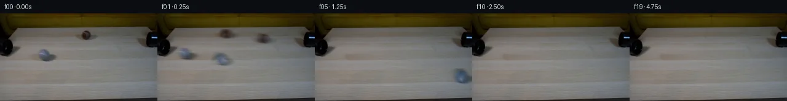

![首帧]()

Round 00
2026-11-05T10:43:06.379741+00:00像素候选变化代码 +189/−0inspection 更新
pixels 6b74289abad714ac · code 0f6efa561c50c033
查看本轮 generate.py 真实 diff
--- previous/generate.py +++ current/generate.py @@ -0,0 +1,189 @@ +#!/usr/bin/env python3 +"""Generate the 20-frame fixed-camera two-ball continuation.""" + +from pathlib import Path + +import cv2 +import numpy as np +from PIL import Image, ImageDraw + +import artifact_io + + +ROOT = Path(__file__).resolve().parent +W, H = 256, 144 +FPS = 4.0 + + +def ellipse_mask(center, axes, angle=0.0, blur=0.0): + """Return a float32 antialiased ellipse mask.""" + scale = 4 + mask = np.zeros((H * scale, W * scale), np.uint8) + c = tuple(int(round(v * scale)) for v in center) + a = tuple(int(round(v * scale)) for v in axes) + cv2.ellipse(mask, c, a, angle, 0, 360, 255, -1, cv2.LINE_AA) + mask = cv2.resize(mask, (W, H), interpolation=cv2.INTER_AREA).astype(np.float32) / 255.0 + if blur: + mask = cv2.GaussianBlur(mask, (0, 0), blur) + return np.clip(mask, 0.0, 1.0) + + +def horizontal_repair(image, mask): + """Repair a compact mask by interpolating along the table's grain direction.""" + src = image.astype(np.float32) + filled = src.copy() + hard = mask > 0.02 + for y in range(H): + xs = np.flatnonzero(hard[y]) + if len(xs) == 0: + continue + # Each supplied component is compact, so a row has one continuous span. + x0, x1 = int(xs.min()), int(xs.max()) + left = src[y, max(0, x0 - 4):x0] + right = src[y, x1 + 1:min(W, x1 + 5)] + lv = left.mean(axis=0) if len(left) else right.mean(axis=0) + rv = right.mean(axis=0) if len(right) else left.mean(axis=0) + n = x1 - x0 + 1 + u = np.linspace(0.0, 1.0, n + 2, dtype=np.float32)[1:-1, None] + filled[y, x0:x1 + 1] = lv * (1.0 - u) + rv * u + + # The generous repair mask contains a clean margin around each actual object. + # A soft edge keeps the unaltered wood grain continuous across the boundary. + blend = cv2.GaussianBlur(mask.astype(np.float32), (0, 0), 0.8)[..., None] + return src * (1.0 - blend) + filled * blend + + +def make_clean_plate(source): + # These masks include both sphere and its soft, right-cast contact shadow. + grey_repair = ellipse_mask((77.0, 69.5), (22.0, 13.0), -2.0, 0.0) + brown_repair = ellipse_mask((144.0, 35.0), (21.0, 11.5), 0.0, 0.0) + plate = horizontal_repair(source, grey_repair) + plate = horizontal_repair(plate, brown_repair) + return plate + + +def affine_layer(layer, center, dx, dy, angle, scale): + matrix = cv2.getRotationMatrix2D(center, angle, scale) + matrix[0, 2] += dx + matrix[1, 2] += dy + return cv2.warpAffine( + layer, + matrix, + (W, H), + flags=cv2.INTER_LINEAR, + borderMode=cv2.BORDER_CONSTANT, + borderValue=0, + ) + + +def distance_at(t, speed, decel): + t = max(0.0, t) + return speed * t - 0.5 * decel * t * t + + +def moving_residual(ball, t): + """Render one rolling ball as a transformed residual over the clean plate.""" + samples = 7 + shutter_seconds = 0.32 / FPS … diff truncated; 102 more lines …